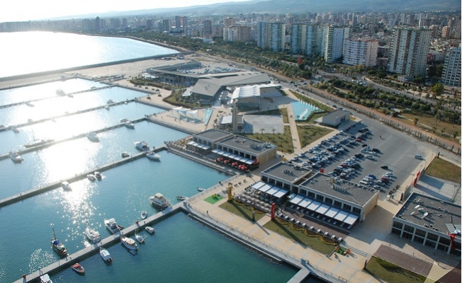
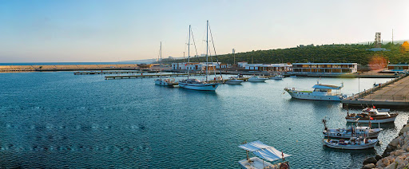

Mersin
Bir diğer deyişle İçel.
Türkiye'nin saklı cenneti.
Mersin Yat Limanı Ulaştırma Bakanlığı’na bağlı DLH İnşaatı Genel Müdürlüğü’nce altyapı inşaatı tamamlanan ve “Yap- İşlet-Devret” (YİD) modeli ile özelleştirilmesi için yapılan 3. ihalede işletmecisi belirlenen 500 yat kapasiteli Mersin Yat Limanı, ERS İnşaat A.Ş.’ye ihale edilen Mersin Yat Limanı, ihaleyi kazanan şirket tarafından teslim alınmıştır.Kumkuyu Yat LimanıErdemli İlçesi, Kumkuyu Kasabası’nda Tarihi Akkale’nin Hemen Yanında 1996 Yılında İnşaatına Başlanılan Yat Limanı, 200 Yat Kapasitelidir. İnşaatı Biten Marina İki Kez İhale Edilmesine Karşın Talip Bulmamıştır. |